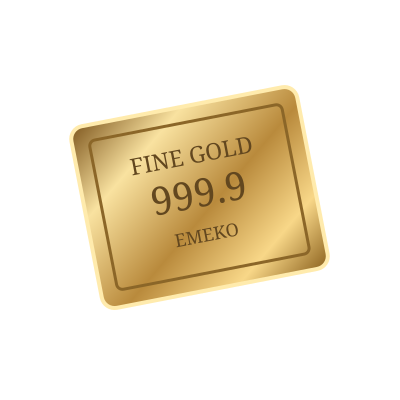

Emeko · 24 karaat
5 gram goudstaaf
Emeko · beleggingsgoud · 999,9/1.000 fijn goud*Koers laden…
Bekijk koers & grafiekOntdek Emeko goudstaven van 5 gram tot 1 kilogram. Kies het gewicht dat past bij uw budget en vraag een vrijblijvende offerte aan op basis van de actuele goudkoers. Productafbeeldingen zijn illustratief.
Bij DMD JWL richten wij ons op fysiek beleggingsgoud van het Belgische merk Emeko. Kleinere goudstaven van 5, 10 en 20 gram kunnen interessant zijn voor een eerste aankoop. Bij grotere gewichten zoals 100, 250 en 500 gram is de premie per gram doorgaans lager. U vraagt per goudstaaf vrijblijvend een offerte aan; de definitieve prijs is afhankelijk van de actuele goudkoers en beschikbaarheid.
* Beoogde zuiverheid: 999,9/1.000 (24 karaat). Exacte productspecificaties, verpakking en eventuele echtheidsdocumentatie worden bij de offerte bevestigd.
